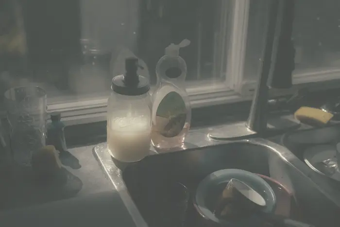
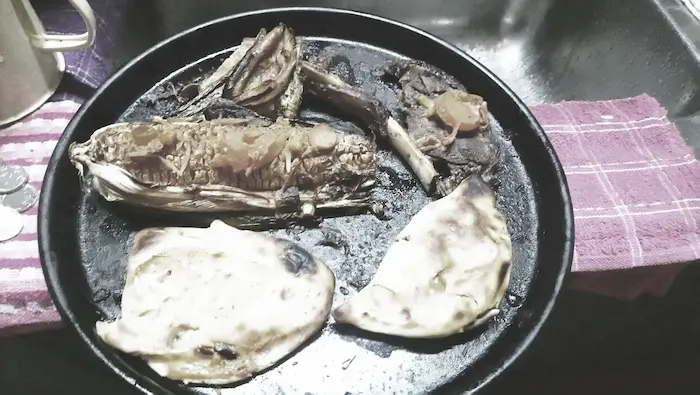
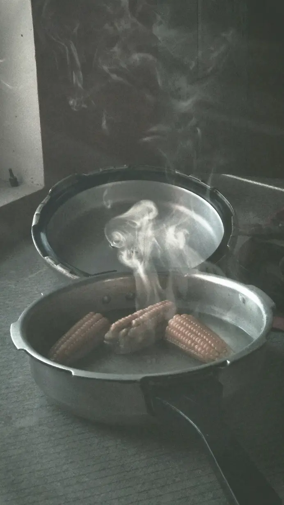

Bedste råd fra Madens beskyttelse
De bedste råd fra madens beskyttelse! Hvad er godt at vide for at undgå at spilde sin mad???
Se mereMadens Beskyttelse er til dig der af og til brænder din mad på, eller står i en situation hvor du har fået tabt det på gulvet og eller har fået lavet en dårlig middag og står og mangler hjælp og råd til at redde sin situation. For vi ved jo alle hvor tæls det er at stå og enten skulle servere mad til nogen eller til en selv og man er nødt til at have en nødplan så ikke man skal starte helt forfra.
De bedste råd fra madens beskyttelse! Hvad er godt at vide for at undgå at spilde sin mad???
Se mereDet skulle bare have været en hyggelig tirsdag aften. En simpel pastaret, et glas vin, lidt musik i baggrunden. Men et enkelt telefonopkald blev til ti minutter – og da røgalarmen begyndte at skrige, var det allerede for sent... Men så lød der et bank på døren... Redningsmanden var på vej.
Book ham her"Det hele begyndte en helt almindelig torsdag, hvor Mikkel havde besluttet sig for at imponere sig selv med en hjemmelavet chili con carne. Han havde set fire YouTube-videoer og følte sig næsten som en professionel kok. Ingredienserne var snittet, gryden stod og simrede, og duften begyndte faktisk at blive lovende...." - Jonna Larsen
"Sofie havde haft en lang dag. En af de dér dage, hvor man starter med at spilde kaffe på sin skjorte og slutter med at indse, at man har gået rundt med to forskellige sokker. Alt hvad hun ønskede nu, var en rolig aften og en portion hjemmelavede frikadeller...." - Sofie Jensen
Sofie havde haft en lang dag. En af de dér dage, hvor man starter med at spilde kaffe på sin skjorte og slutter med at indse, at man har gået rundt med to forskellige sokker. Alt hvad hun ønskede nu, var en rolig aften og en portion hjemmelavede frikadeller. Det var hendes trøstemad, og hun havde glædet sig hele vejen hjem. Hun tændte for komfuret, satte panden over og begyndte at forme de perfekte frikadeller. Duften bredte sig hurtigt, og Sofie smilede for første gang hele dagen. Det her, tænkte hun, det skal nok rette op på alt. Men så vibrerede hendes telefon med en besked fra hendes chef: “Kan du nå at sende de filer i aften?” Sofie sukkede. Kun ét minut, tænkte hun. Bare lige et hurtigt svar. Minuttet blev til fem. Fem blev til ti. Og pludselig lød der et hisssssss fra køkkenet, som om panden var blevet dybt fornærmet. Sofie fór ud i køkkenet og stoppede op. Synet var næsten poetisk — hvis poesi lugtede af brændt fars. Pandens indhold var blevet forvandlet fra gyldne frikadeller til kulstykker, der mest lignede små meteoritter. En af dem var endda hoppet over kanten og lå midt på gulvet som et faldet offer. Fedtsprøjt dækkede ovnen, og røgen lavede sit eget lille skæringspunkt med loftet. “Nej nej nej…” mumlede hun og viftede febrilsk med et viskestykke. Røgalarmen vågnede øjeblikkeligt og skreg sin dom ud i hele lejligheden. Sofie stod midt i kaosset og følte alt ramle sammen igen. Det var dér, hun huskede anbefalingen fra en ven: Ring til Redningsmanden. Han rydder op. Han ordner kaos. Han har set alt. Med et sidste blik på de kulforkullede kødboller tastede hun nummeret. “Redningsmanden her,” lød det i den anden ende — så roligt, som om brændte frikadeller var en helt normal torsdagsaktivitet. Tjue minutter senere stod han i døren: Arbejdsjakke, handsker, en effektivitet der kunne imponere enhver, og en duft af rengøringsmiddel, der lovede frelse. Han gik i gang uden at tøve. Røg væk. Pande afrenset. Ovn tørret. Gulv frit for meteoritter. Og Sofie? Hun stod bare og så på, som om hun var vidne til et mirakel. Da han var færdig, smilede han og sagde: “Frikadeller er en klassiker. De skal nok lykkes næste gang.” Sofie kunne ikke lade være med at grine. For selvom aftensmaden var tabt, var dagen alligevel blevet reddet — af én mand, en sprayflaske og en ro, der kunne temme selv de mest katastrofale køkkenoplevelser.
"Lars havde besluttet, at han ville imponere sin date med en hjemmelavet brunch. Alt skulle være perfekt: pandekager, friskpresset juice… og selvfølgelig en fancy omelet med ost, tomat og basilikum." - Lars Jørgensen
Lars havde besluttet, at han ville imponere sin date med en hjemmelavet brunch. Alt skulle være perfekt: pandekager, friskpresset juice… og selvfølgelig en fancy omelet med ost, tomat og basilikum. Han startede med stort overblik, hakkede grøntsager og slog æggene ud med præcision. Men da han ville tilføje lidt ekstra “flair”, fik han idéen at piske omeletten ekstra luftigt. Hvad kunne gå galt? Meget, viste det sig. Lars begyndte at tale med sin date om sine store fremtidsplaner, mens panden langsomt blev varmere. Pludselig hørte han et POP!, efterfulgt af en lille eksplosion, der sendte æggeblanding op ad væggen, i loftet og – værst af alt – over hans helt hvide skjorte. Røgen begyndte at brede sig, og alarmen skreg som en sirene. Hans date stirrede med store øjne, og Lars stod midt i køkkenet med det hele dækket i en grumset, halvt fast omeletmasse. “Jeg tror… vi har brug for hjælp,” stammede han. Og som om universet hørte hans bøn, ringede han til Redningsmanden. Tyve minutter senere trådte han ind med et professionelt smil og en ro, der kunne få en tornado til at slappe af. Med nogle hurtige bevægelser blev køkkenet ryddet, panden rengjort, væggene aftørret og alarmen stilnet. Da Redningsmanden gik, var omeletkatastrofen glemt. Lars’ date grinede stadig, men på en helt ny måde — ikke af fejlene, men af lettelsen over, at nogen kunne redde dagen, selv når køkkenet lignede et bombet område. Lars besluttede én ting den dag: næste gang, han ville imponere med mad, skulle han allierede sig med Redningsmanden på forhånd. - Lars Jørgensen